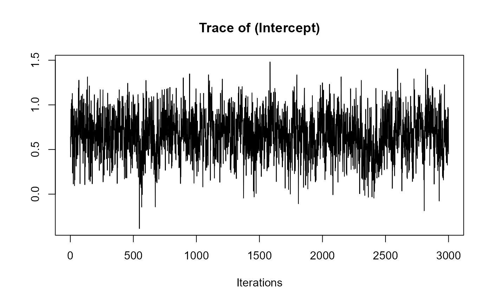
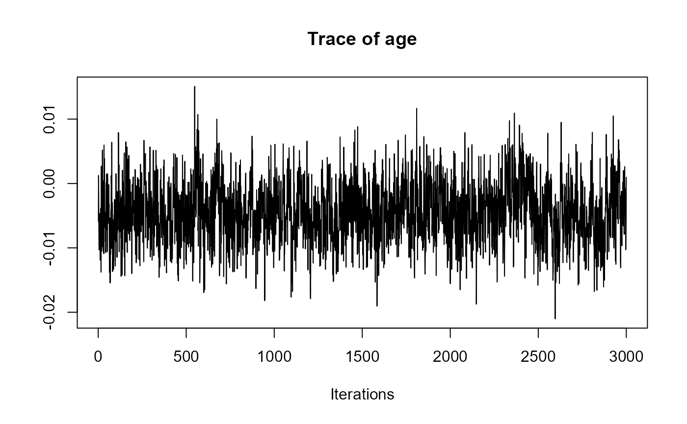
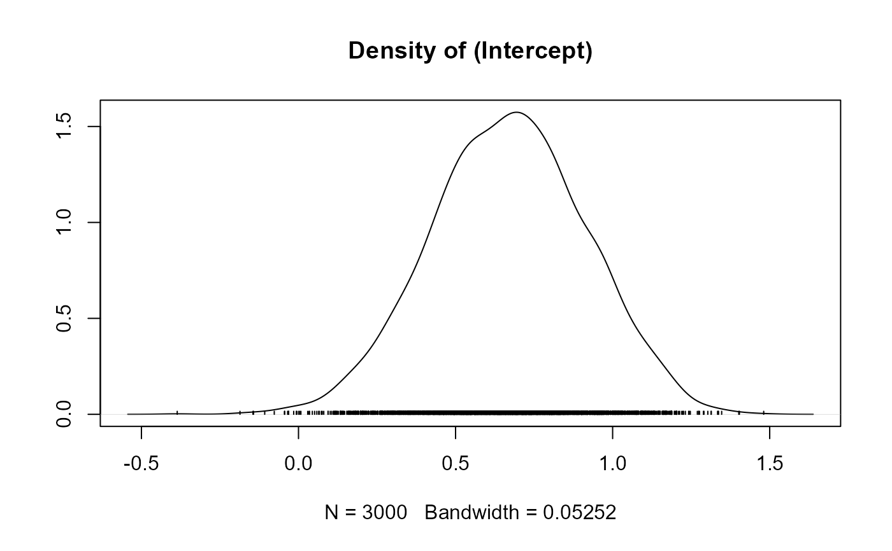
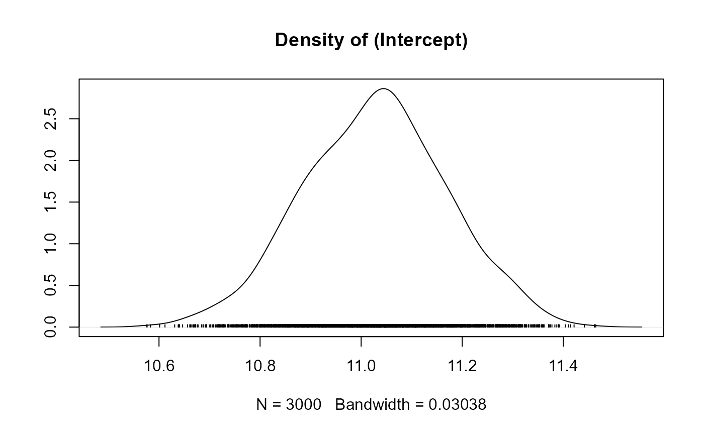
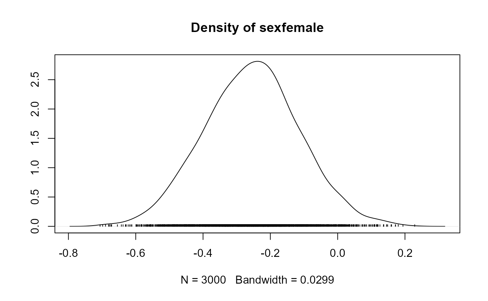
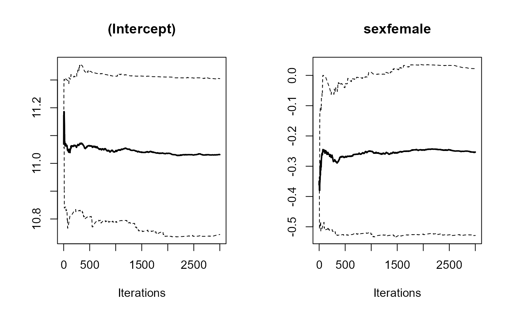
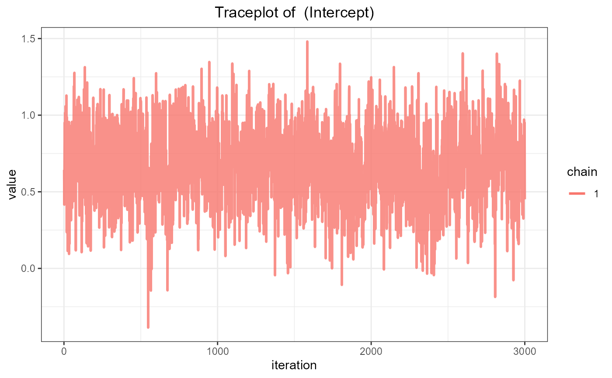
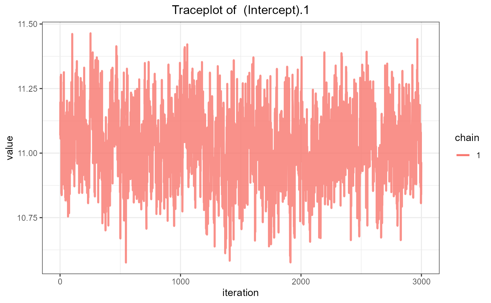
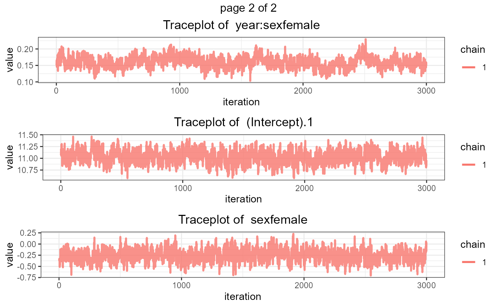
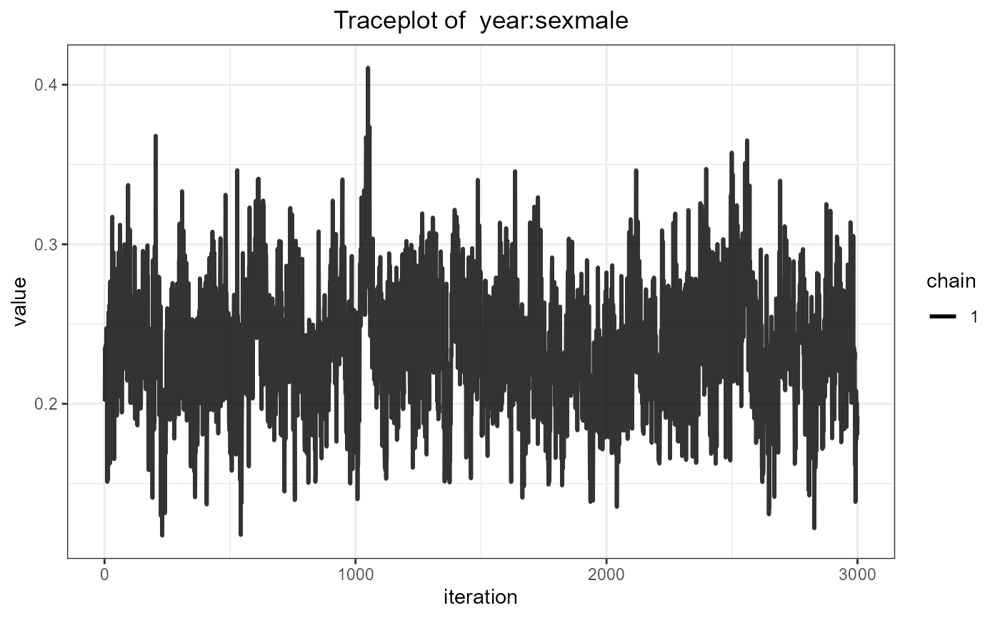

Various Methods for Functions from the coda Package
coda_methods.RdMethods for an object of class "jm" for diagnostic functions.
traceplot(object, ...) # S3 method for jm traceplot(object, parm = c("all", "betas", "sigmas", "D", "bs_gammas", "tau_bs_gammas", "gammas", "alphas"), ...) ggtraceplot(object, ...) # S3 method for jm ggtraceplot(object, parm = c("all", "betas", "sigmas", "D", "bs_gammas", "tau_bs_gammas", "gammas", "alphas"), size = 1, alpha = 0.8, theme = c('standard', 'catalog', 'metro', 'pastel', 'beach', 'moonlight', 'goo', 'sunset'), grid = FALSE, gridrows = 3, gridcols = 1, ...) gelman_diag(object, ...) # S3 method for jm gelman_diag(object, parm = c("all", "betas", "sigmas", "D", "bs_gammas", "tau_bs_gammas", "gammas", "alphas"), ...) densplot(object, ...) # S3 method for jm densplot(object, parm = c("all", "betas", "sigmas", "D", "bs_gammas", "tau_bs_gammas", "gammas", "alphas"), ...) ggdensityplot(object, ...) # S3 method for jm ggdensityplot(object, parm = c("all", "betas", "sigmas", "D", "bs_gammas", "tau_bs_gammas", "gammas", "alphas"), size = 1, alpha = 0.6, theme = c('standard', 'catalog', 'metro', 'pastel', 'beach', 'moonlight', 'goo', 'sunset'), grid = FALSE, gridrows = 3, gridcols = 1, ...) cumuplot(object, ...) # S3 method for jm cumuplot(object, parm = c("all", "betas", "sigmas", "D", "bs_gammas", "tau_bs_gammas", "gammas", "alphas"), ...)
Arguments
| object | an object inheriting from class |
|---|---|
| parm | a character string specifying which parameters of the joint model to plot. Possible options are |
| size | the width of the traceplot line in mm. Defaults to 1. |
| alpha | the opacity level of the traceplot line. Defaults to 0.8. |
| theme | a character string specifying the color theme to be used. Possible options are |
| grid | logical; defaults to |
| gridrows | number of rows per page for the grid. Only relevant when using |
| gridcols | number of columns per page for the grid. Only relevant when using |
| ... | further arguments passed to the corresponding function from the coda package. |
Value
traceplot()Plots the evolution of the estimated parameter vs. iterations in a fitted joint model.
ggtraceplot()Plots the evolution of the estimated parameter vs. iterations in a fitted joint model using ggplot2.
gelman_diag()Calculates the potential scale reduction factor for the estimated parameters in a fitted joint model, together with the upper confidence limits.
densplot()Plots the density estimate for the estimated parameters in a fitted joint model.
ggdensityplot()Plots the evolution of the estimated parameter vs. iterations in a fitted joint model using ggplot2.
cumuplot()Plots the evolution of the sample quantiles vs. iterations in a fitted joint model.
Author
Dimitris Rizopoulos d.rizopoulos@erasmusmc.nl
See also
Examples
# \donttest{ # linear mixed model fits fit_lme1 <- lme(log(serBilir) ~ year:sex + age, random = ~ year | id, data = pbc2) fit_lme2 <- lme(prothrombin ~ sex, random = ~ year | id, data = pbc2) # cox model fit fit_cox <- coxph(Surv(years, status2) ~ age, data = pbc2.id) # joint model fit fit_jm <- jm(fit_cox, list(fit_lme1, fit_lme2), time_var = "year", n_chains = 1L) # trace plot for the fixed effects in the linear mixed submodels traceplot(fit_jm, parm = "betas")# density plot for the fixed effects in the linear mixed submodels densplot(fit_jm, parm = "betas")# cumulative quantile plot for the fixed effects in the linear mixed submodels cumuplot(fit_jm, parm = "betas")# trace plot for the fixed effects in the linear mixed submodels ggtraceplot(fit_jm, parm = "betas")ggtraceplot(fit_jm, parm = "betas", grid = TRUE)# trace plot for the fixed effects in the linear mixed submodels ggdensityplot(fit_jm, parm = "betas")ggdensityplot(fit_jm, parm = "betas", grid = TRUE)# }